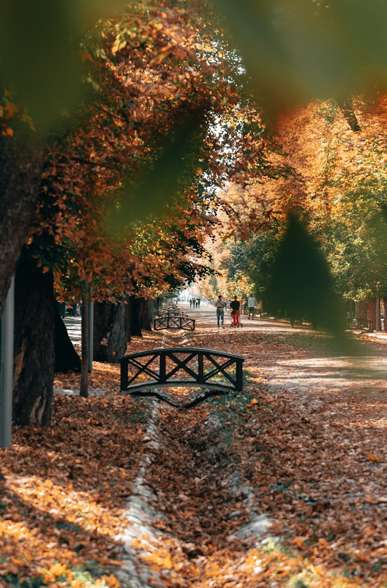
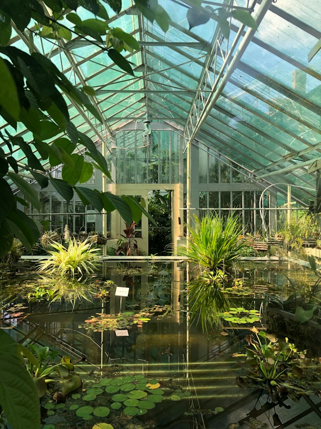

CLUJ-NAPOCA
Green, young and safe: the student city in the heart of Transylvania.

Shady paths, benches everywhere and fresh air, just a few minutes from the city center.
Cafés, terraces and lively little streets, from early morning until late at night.

Folk costumes, old tools and traditions that tell the story of Transylvania.